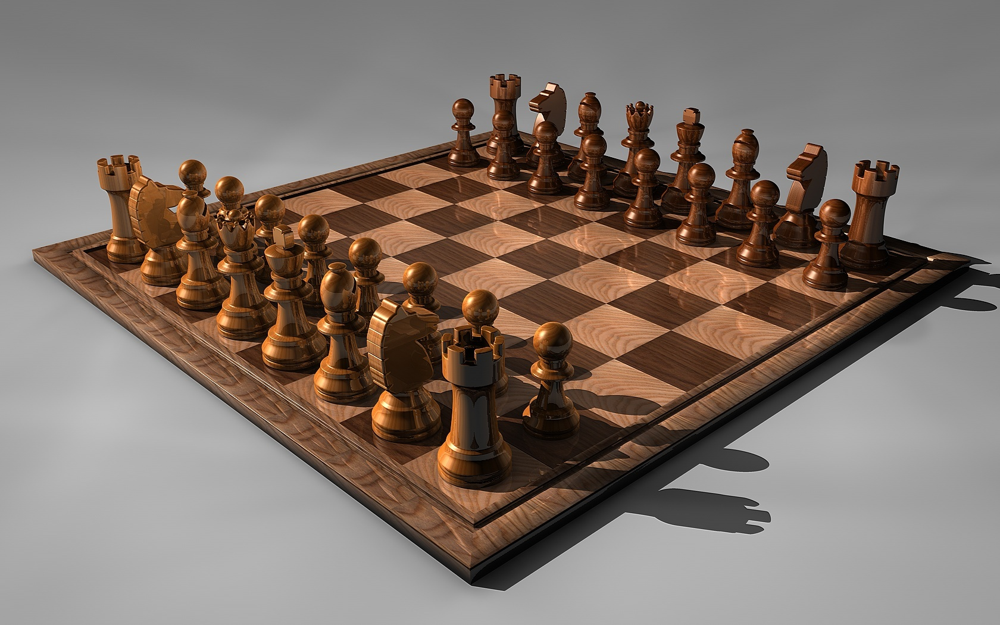

Aprende en CHESS.com
QUE ES EL AJEDREZ

El AJEDREZ es un juego entre dos personas, de las cuales, cada uno dispone de 16 piezas móviles que se colocan sobre un tablero dividido en 64 casillas o escaques. En su versión de competición, está considerado como un deporte. Originalmente inventado como un juego para personas, a partir de la creación de computadoras y programas comerciales de ajedrez, una partida de ajedrez puede ser jugada también por una persona contra un programa de ajedrez o por dos programas de ajedrez entre sí. Se juega sobre un tablero cuadriculado de 8×8 casillas, alternadas en colores blanco y negro, que constituyen las 64 posibles posiciones de las piezas para el desarrollo del juego.
Al principio del juego cada jugador tiene dieciséis piezas: un rey, una dama, dos alfiles, dos caballos, dos torres y ocho peones. Se trata de un juego de estrategia en el que el objetivo es «derrocar» al rey del oponente. Esto se hace amenazando la casilla que ocupa el rey con alguna de las piezas propias sin que el otro jugador pueda proteger a su rey interponiendo una pieza entre su rey y la pieza que lo amenaza, mover su rey a un escaque libre o capturar a la pieza que lo está amenazando, lo que trae como resultado el jaque mate y el fin de la partida. Para clasificar a los jugadores de ajedrez, la FIDE (La Federación Internacional de Ajedrez) utiliza un sistema conocido como ELO.
QUE ES EL ELO
El sistema de puntuación ELO es un método matemático, basado en cálculo estadístico, para calcular la habilidad relativa de los jugadores de deportes como el ajedrez. Debe su nombre a su inventor, el profesor Árpád Élő (1903-1992), un físico estadounidense de origen húngaro, contrariamente a la suposición generalizadamente extendida de que se trata de un acrónimo. A veces se recurre al uso de mayúsculas ELO para distinguir al método respecto de la persona que lo inventó, aunque no es lo usual.
RANGOS DEL AJEDREZ
| Rango | ELO |
|---|---|
| Pricipiante | 1000 - 1399 |
| Aficionado | 1400 - 1599 |
| Jugador de club medio | 1600 - 1799 |
| Jugador de club fuerte | 1800 - 1999 |
| Candidata a Maestra (WCM) | 2000 - 2099 |
| Maestra FIDE (WFM) | 2100 - 2199 |
| Candidato a Maestro (CM) | 2200 - 2299 |
| Maestro FIDE (MF) | 2300 - 2399 |
| Maestro Internacional (MI) | 2400 - 2499 |
| Gran Maestro (GM) | 2500 - 2599 |
| Super Gran Maestro | 2600 - 2699 |
| Candidato a Campeón del Mundo | 2700 - 2799 |
| Campeón del Mundo | ≥ 2800 |